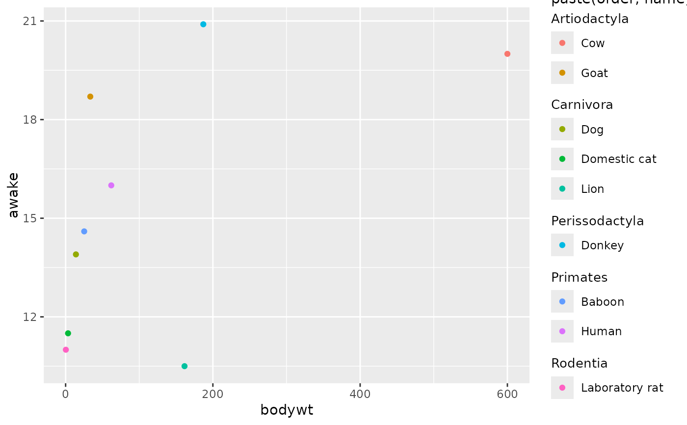
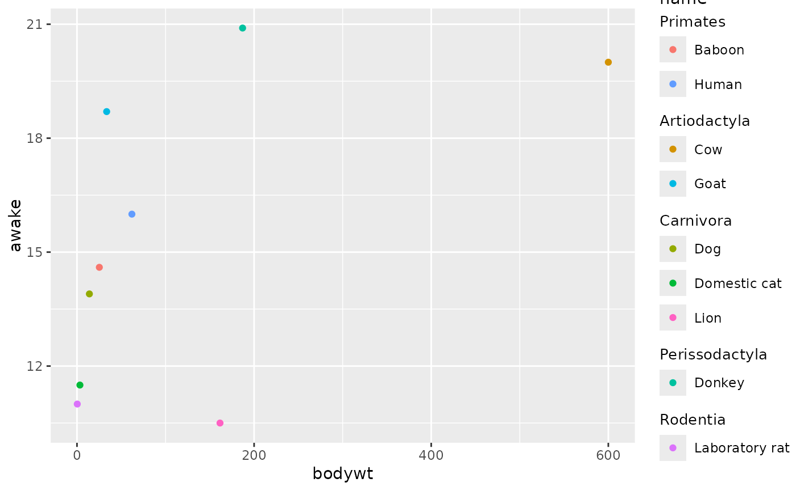
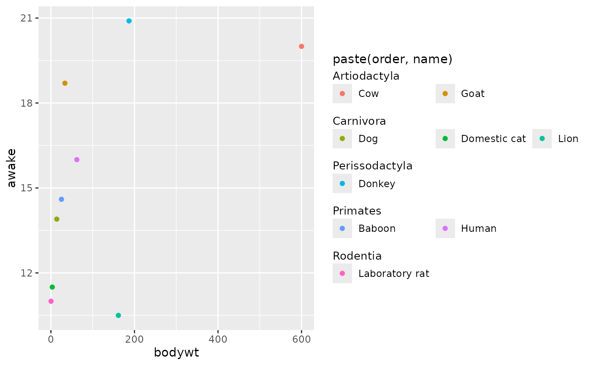
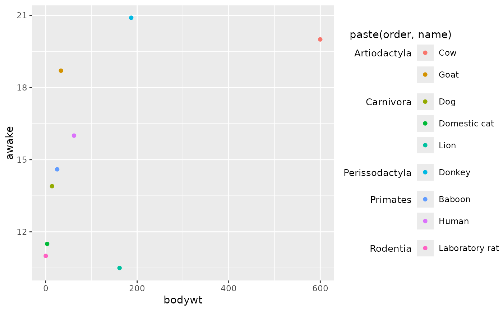
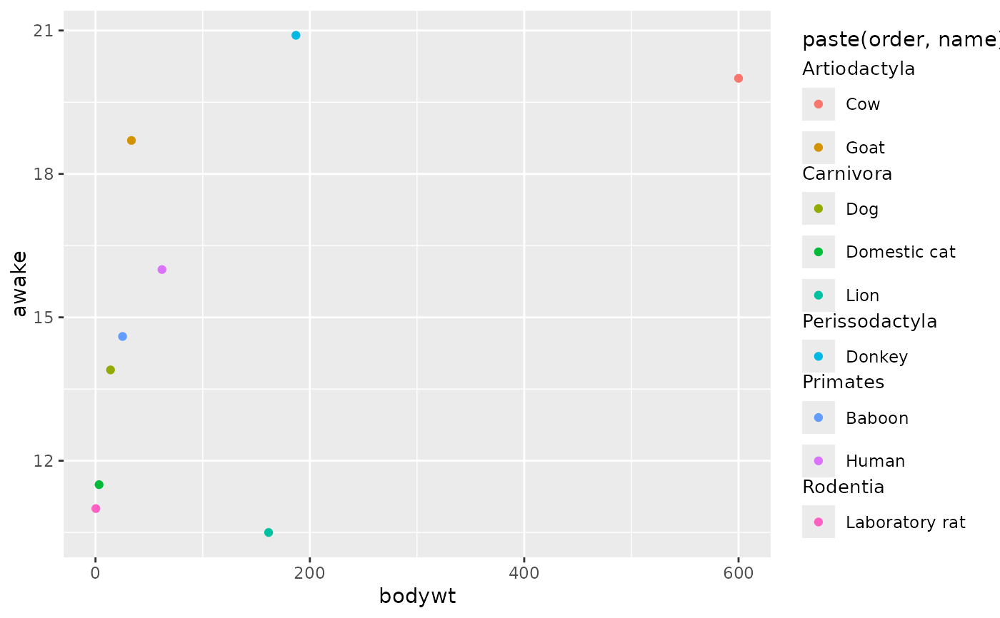
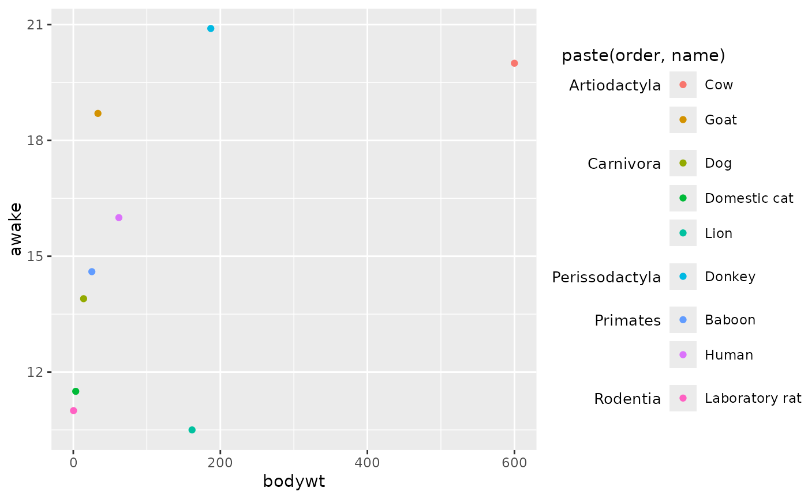
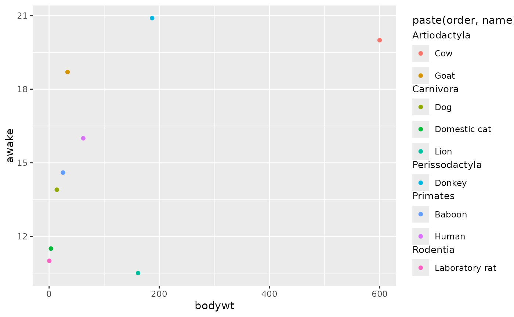

This legend resembles ggplot2::guide_legend(), but has the ability to
keep groups in blocks with their own titles.
Arguments
- key
A group key specification. Defaults to
key_group_split()to split labels to find groups.- title
A
<character[1]>or<expression[1]>indicating the title of the guide. IfNULL, the title is not shown. The default,waiver(), takes the name of the scale object or the name specified inlabs()as the title.- override.aes
A named
<list>specifying aesthetic parameters of the key glyphs. See details and examples inguide_legend().- nrow, ncol
A positive
<integer[1]>setting the desired dimensions of the legend layout. Eithernroworncolcan be set, but not both,- theme
A
<theme>object to style the guide individually or differently from the plot's theme settings. Thethemeargument in the guide overrides and is combined with the plot's theme.- position
A
<character[1]>giving the location of the guide. Can be one of"top","bottom","left"or"right".- direction
A
<character[1]>indicating the direction of the guide. Can be on of"horizontal"or"vertical".- order
A positive
<integer[1]>that specifies the order of this guide among multiple guides. This controls in which order guides are merged if there are multiple guides for the same position. If0(default), the order is determined by a hashing indicative settings of a guide.
See also
Other standalone guides:
guide_axis_base(),
guide_axis_dendro(),
guide_axis_nested(),
guide_colbar(),
guide_colring(),
guide_colsteps(),
guide_legend_base(),
guide_legend_cross()
Other legend guides:
guide_legend_base(),
guide_legend_cross()
Examples
# Standard plot for selection of `msleep`
df <- msleep[c(9, 28, 11, 5, 34, 54, 64, 24, 53), ]
p <- ggplot(df) +
aes(bodywt, awake, colour = paste(order, name)) +
geom_point()
# By default, groups are inferred from the name
p + guides(colour = "legend_group")

# You can also use a look-up table for groups
# The lookup table can be more expansive than just the data:
# We're using the full 'msleep' data here instead of the subset
lut <- key_group_lut(msleep$name, msleep$order)
p + aes(colour = name) +
guides(colour = guide_legend_group(key = lut))

# `nrow` and `ncol` apply within groups
p + guides(colour = guide_legend_group(nrow = 1))

# Groups are arranged according to `direction`
p + guides(colour = guide_legend_group(ncol = 1, direction = "horizontal")) +
theme(legend.title.position = "top")
 # Customising the group titles
p + guides(colour = "legend_group") +
theme(
legendry.legend.subtitle.position = "left",
legendry.legend.subtitle = element_text(
hjust = 1, vjust = 1, size = rel(0.9),
margin = margin(t = 5.5, r = 5.5)
)
)

# Changing the spacing between groups
p + guides(colour = "legend_group") +
theme(legendry.group.spacing = unit(0, "cm"))

# Customising the group titles
p + guides(colour = "legend_group") +
theme(
legendry.legend.subtitle.position = "left",
legendry.legend.subtitle = element_text(
hjust = 1, vjust = 1, size = rel(0.9),
margin = margin(t = 5.5, r = 5.5)
)
)

# Changing the spacing between groups
p + guides(colour = "legend_group") +
theme(legendry.group.spacing = unit(0, "cm"))
